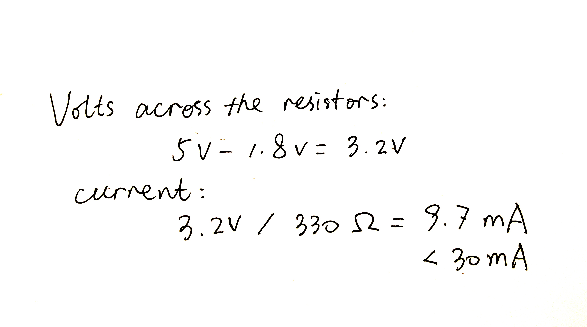
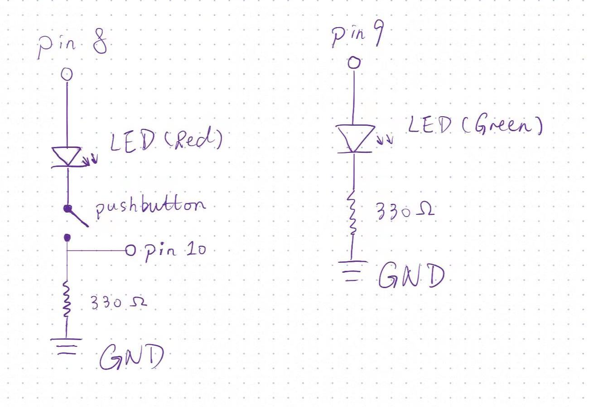

Joseph Zhang's Assignment 2!

The above is the calculation process of choosing resistors. I chose 330Ω resistors for those LEDs,
so that the current would not be larger than 30mA.

Here are the schematics of the circuit! I use pin 10 to detect
whether the users press the button, so that control the fading.

Here is the Fade GIF! When you press the button, the red LED will
be turned on and the green one will start fading. When you release it,
they will be turned off.
If you want to learn about how I made this by Arduino, please find the code below!